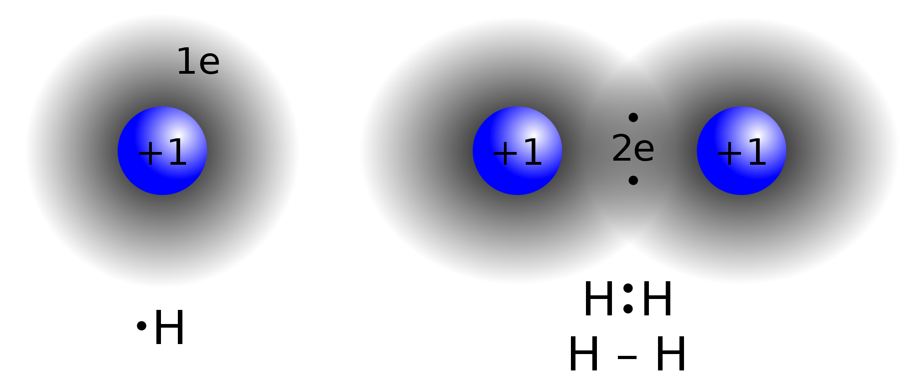
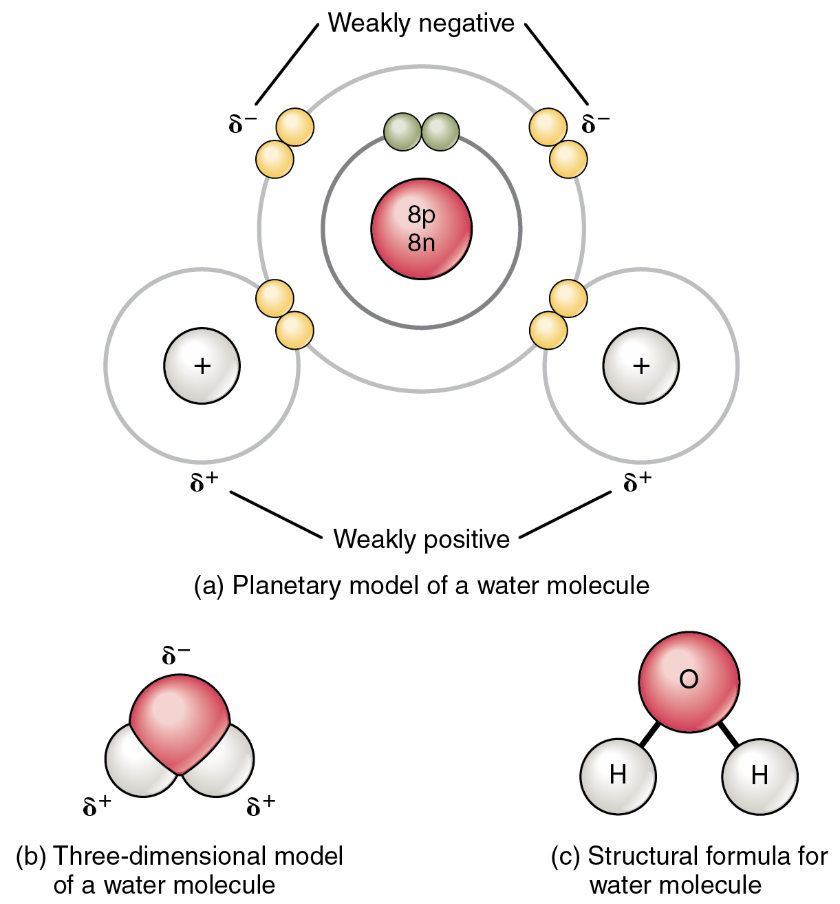
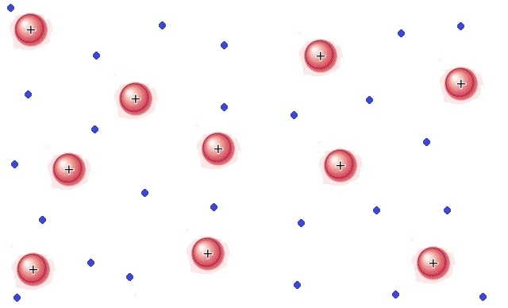
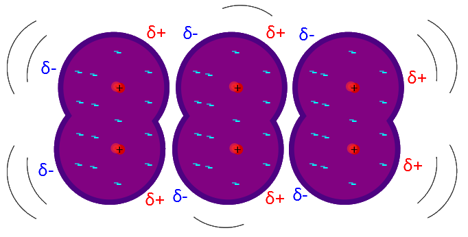

There are several types of attractive forces which result from either differences in electronegativity or dipole moments. A bond is a permanent attractive force. Additionally, it's important to distinguish intermolecular and intramolecular forces. An intramolecular force is between that atoms makeup a molecule. An intermolecular force is between entire molecules.

A non-polar covalent bond occurs when the electrons are equally shared between atoms. For example, in `H_2` the 2 bonding electrons are equidistant from each H atom. Just as the name implies, the bond is non-polar and thus no dipole moment exists.
This type of bond exists when the bonding atoms are the same or have very similar electronegativities. The maximum polarity for a non-polar covalent bond is 0.5.

A polar-covalent bond is a bond where there is an unequal sharing of electrons between atoms. This occurs for bonds between atoms that have a moderate difference in electronegativity. The range of polarity for a polar-covalent bond is 0.5 - 1.6
For example, the H-O bonds in water are considered non-polar covalent bonds. The polarity for the H-O bond is calculated as follows:
`"Polarity"_(H-O): |EN_O - EN_H|= |3.44-2.20|=1.24`
Since this polarity value is in between 0.5 and 1.6, the H-O bond is considered a polar-covalent bond.

An ionic bond is a bond between atoms of very high differences in electronegativity (greater than 1.6). In ionic bonds, there is a transfer of electrons.
This is seen in the .gif above. The highly electronegative F atom takes an electron away from the valence shell of Na. This ends up satisfying both octets of F and Na.
Ionic bonds end up creating ions, which are atoms where the # of electrons is different from the # of protons. In the example, the F atom has 8 electrons compared to its usual 7 and the Na atom has 8 valence electrons compared to its usual 1. Thus, both are now ionized. The result of F gaining an additional electron is that it now has a net negative charge: we denote the fluorine ion as `F^-`. The same goes for Na: since Na lost an electron, it now has a net positive charge leaving it as `Na^+`.
A metallic bond describes the intermolecular bonding of metals. This means that a metallic bond describes why many atoms of metals bond together rather than why a single atom of metal bonds to another single atom. Recall that the transition metals are the elements in the d-block of the periodic table. Since these d-electrons are not involved in valency, they are free to move around. The result is that there is a sea of electrons. Since each metal atom had to give away electrons to contribute to this sea, the atoms themselves have a positive charge (seen below). The bonding of metals is a result of the free d-electrons and the positive charges on the metal.


These are also known as London Dispersion Forces and Dipole-Induced Dipoles and occur between all molecules. We use Van der Waals interactions primarily to explain why molecules that don't have bonds or coulombic attraction will still demonstrate a slight attraction for one another. This is because of slight distortions in the electron cloud, which create slight `delta^+` and `delta^-` within the molecule.
We can see this in the image above. Normally the molecules wouldn't be attracted to each other, but once the electron cloud of one molecule moves slightly off-center, that molecule temporarily has a higher amount of electrons on one side than the other. This surplus of electrons then induces the electron cloud of the neighboring molecule to move away, inducing a dipole in the new molecule. This continues on and results in an attractive force where there would normally be no attractive forces.
Van der Waals Interactions are temporarily interactions and are usually significantly weaker than permanent bonds.
A hydrogen bond is a variation of the Van der Waals Interaction that involves H bonding to N, O, or F. Hydrogen forms a particularly strong bond to these 3 elements which results in a strong dipole moment along the bond. Since the H now has a `delta^+` on it, it is attracted to surrounding atoms with `delta^-`. The result of this is that molecules with H bonded to N, O, or F will be attracted to each other through Coulombic attraction.
The H-bond is an attractive force between entire molecules, not the H-(N,O, or F) bond itself.This may be confusing seeing as bond is in the name, but the H-bond is not an actual bond, but an attractive force. If you check out the picture on top, the O atom of the left water molecule is slightly attracted to the H atom of the right water molecule due to the induced `delta`s. This is called an intermolecular force as it involves the force between entire molecules, as opposed to the atoms within the molecule. The result of this is that molecules that contain H-(N,O, or F) bonds will be more bonded to each other than usual.
Forces
The general trend of strength in the different types of bonds is as follows:
(Strongest): Ionic Bonds > Polar Covalent Bonds > Non-Polar Covalent Bonds > Hydrogen Bonds >Van der Waals Interactions: (Weakest)
Bond Type |
Polarity |
Non-Polar Covalent |
0.2-0.5 |
Polar-Covalent |
0.5-1.6 |
Ionic |
Greater than 1.6 |
A bond is a permanent attractive force.
An intermolecular force is between molecules whereas an intramolecular force is within the molecule itself.
Non-Polar covalent bonds have equal electron sharing and are between atoms of little to no difference in electronegativity.
Polar Covalent bonds have unequal electron sharing and are between atoms with a moderate difference in electronegativity.
Ionic bonds involve an electron transfer and creation of ions. These exist when there is a high difference in electronegativity.
Metals bond in bulk via. a sea of electrons
Hydrogen Bonding describes why molecules with H-(N,O, or F) bonds are attracted to one another.
Van der Waals Interactions are temporary attractive forces resulting from the slight distortion of electron clouds. These are the weakest of all attractive forces but describe why molecules that shouldn't be attracted to each other are.
Ionic Bonds are the strongest bonds.
Covalent, Ionic, and Metallic bonds are permanents bonds whereas Van der Waals Interactions and Hydrogen bonds are temporary attractive forces.